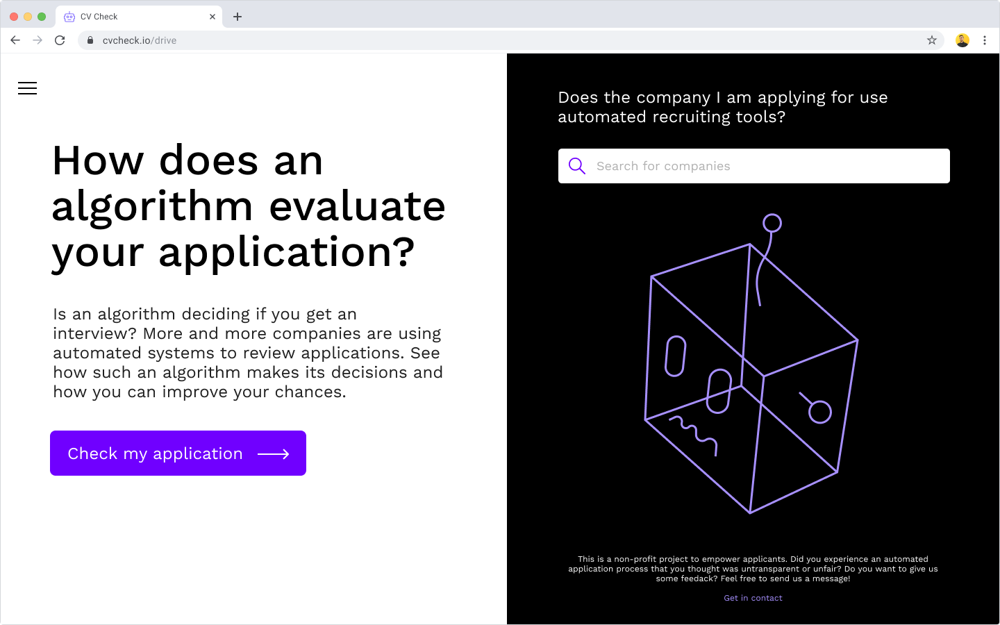
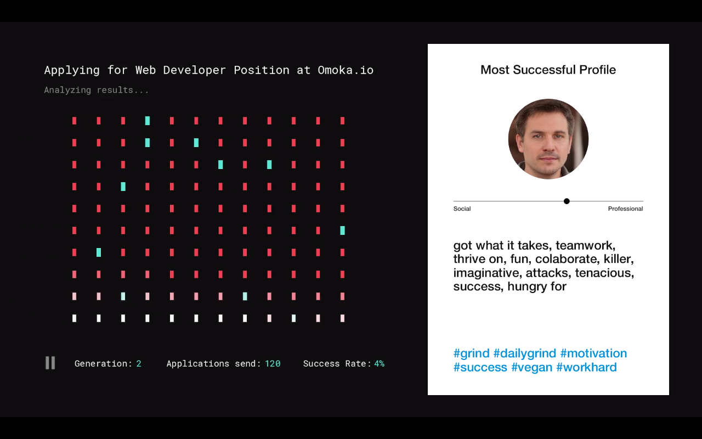
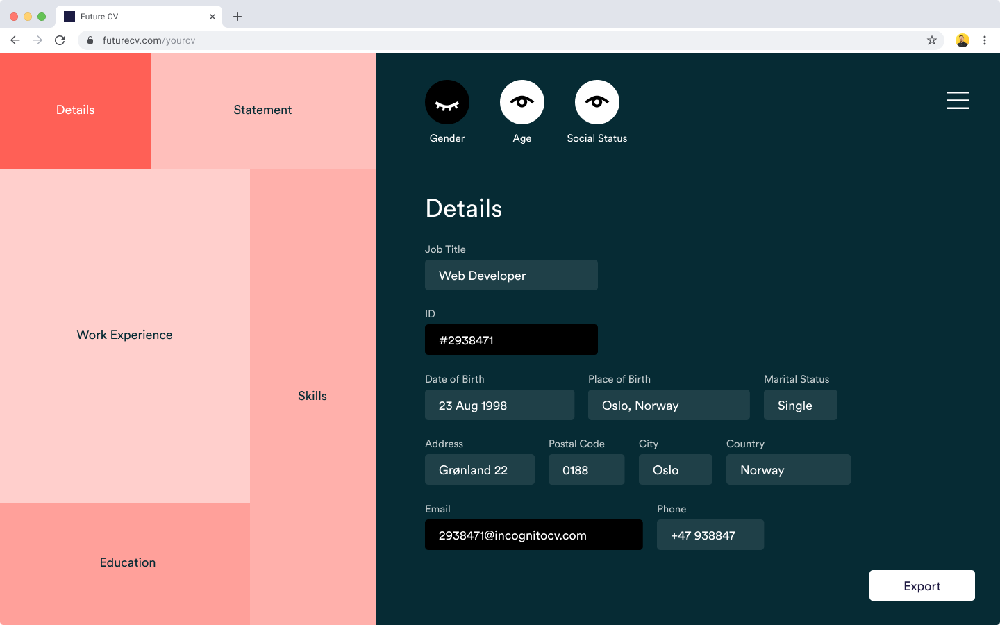

Automation increasingly shapes our lives — the way we work, and the way we play. NAU, The New Automated Agency offers a small series of imagined critical design probes to explore the future of automated recruitment systems, and how we engage with them.
Context
By automating the screening process of applications, companies are able to access every candidate, without missing out on talent that could get lost in high-volume submissions.
However, relying on an algorithm to rank candidates and make critical decisions that impact people’s livelihoods requires caution.
Applicants who are directly impacted by automated decisions do not get to understand, question or contest them. We asked ourselves what we, as designers, can do to empower those who are affected by these opaque processes.
What is our intent?
Evaluating an algorithm for fairness requires extensive technical knowledge. This also necessitates that the knowledge is conveyed to the general user in a simple, understandable way. By making AI tools more comprehensible for those without expertise, we wish to enable a more critical and conscious way (for users of these services) of engaging with decision-making AI systems.
What is our approach?
In order to develop our concept further and evaluate our ideas, we have built a few prototypes for you to play with. They are separated in 2 phases. The first phase is about sensible interventions while the second category explores speculative ideas to spark conversation.
1 — Enabling Understanding (human vs machine and implicit biases)
2 — Disrupting Industry Standards (questioning current practices in automated recruitment)
How can you help?
Please go through each of the prototypes and leave us your feedback after.
You can do this by answering a few questions (follow the links below), or by having an informal video call with us afterwards!
We recommend you view these prototypes on your laptop or PC.
Kindly note, that these prototypes have limited functionality. The areas highlighted in BLUE are clickable.
1. Enabling Understanding
To judge, contest, or trust an automated decision, we need to understand how the decision was made. How can we enable applicants to understand the process behind an automated decision?

CV Check
After applicants have been rejected, they are often left wondering what led to the decision. However, GDPR gives everyone the ‘right to an explanation’ if that decision was made by an automated process, i.e without human intervention. We imagine below, how such an explanation could look like, in the form of a feedback report.
After applicants have been rejected, they are often left wondering what led to the decision. However, GDPR gives everyone the ‘right to an explanation’ if that decision was made by an automated process, i.e without human intervention. We imagine below, how such an explanation could look like, in the form of a feedback report.
The second phase explores speculative ideas to spark conversation about prevailing standards in automated recruitment.

Data Doubles
After applicants have been rejected, they are often left wondering what led to the decision. However, GDPR gives everyone the ‘right to an explanation’ if that decision was made by an automated process, i.e without human intervention. We imagine below, how such an explanation could look like, in the form of a feedback report.

Incognito CV
After applicants have been rejected, they are often left wondering what led to the decision. However, GDPR gives everyone the ‘right to an explanation’ if that decision was made by an automated process, i.e without human intervention. We imagine below, how such an explanation could look like, in the form of a feedback report.